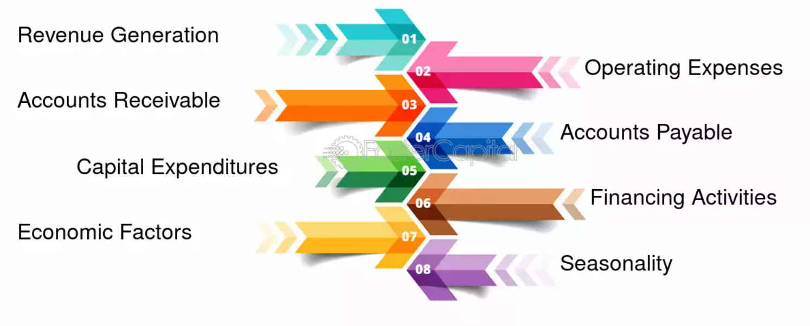
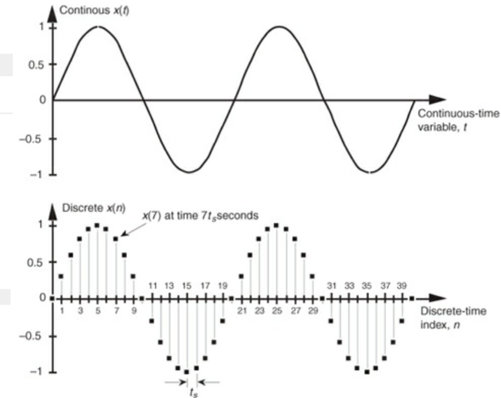
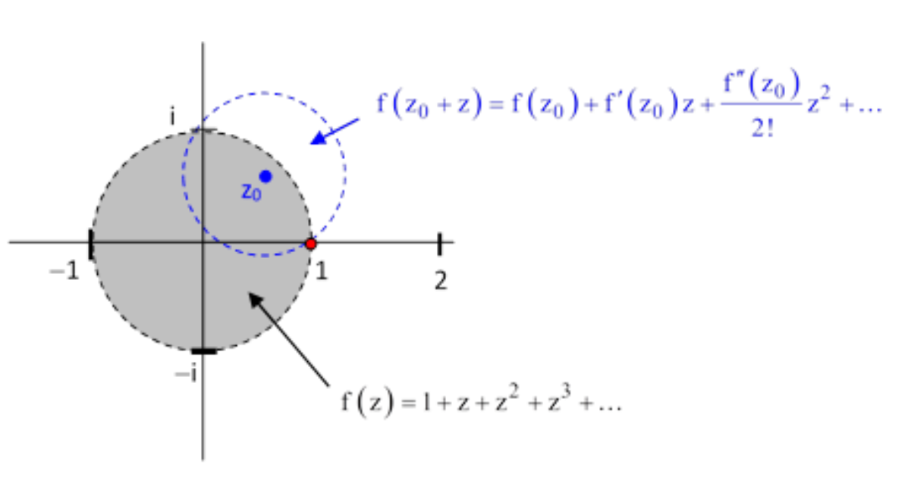

|
** Disclaimer: Kindly note that this page is still under construction. As such some but not all of the embedded links function correctly.
|
Engineering Science Third-Year (2024-2025) |
|  |
CHE374H1: Economic Analysis and Decision Making
Taught by Professor Yuri Lawryshyn Fall 2024 Lecture Notes: W5 | W9 | Problem Set Solutions: HW 1 | HW 2 | HW 3 | HW 4 | HW 5 | HW 6 | HW 7 | HW 8 | Quiz Solutions: Q6 | Q7 | Q8 | Q9 | Aidsheet: Term Test 1 (October 9th 2024) | Term Test 2 (November 13th 2024 Practice Midterms (TT1): 2024 | 2023 | 2022 | 2021 | Practice Midterms (TT2): 2023 | 2022 | This course focuses on the economic evaluation of engineering projects and investment proposals. Topics include cost estimation, financial and cost accounting, depreciation, inflation, taxation and financing options such as equity, bonds, and loans. |

|
ECE352H1: Computer Organization
Taught by Professor Andreas Moshovos Fall 2024 Lecture and Tutorial Notes: PDF Lab: Lab 0 ( Memory Quiz) | Lab 1 ( pre-lab, leds_7segs.s) | Lab 2 ( pre-Lab, part1.s, part2.s, part3.s) | Lab 3 ( part1.s, part2.s, part3.s, part4.pdf, part5.s) | Lab 4 ( pre-lab, part1.s, part2.s) | This course covers materials for NIOS V |
|  |
ECE355H1: Signal Analysis and Communication
Taught by Professor Frank R. Kschischang Fall 2024 Lecture Notes: PDF Problem Set Solutions: HW 1 | HW 2 | HW 3| HW 4 | HW 5 | HW 6 | HW 7 | HW 8 | HW 9 |
|
|  |
MAT389H1: Complex Analysis
Taught by Professor Tristan Collins Fall 2024 Lecture and Tutorial Notes: PDF Problem Set Solutions: HW 1 | HW 2 | HW 3 | HW 4 | HW 5 | HW 6 | HW 7 | HW 8 | This course covers complex analysis and its applications. Key topics include analytic functions, the Cauchy-Riemann equations, contour integration, Cauchy's theorem, Taylor and Laurent series, singularities, and residue calculus. It also explores conformal mapping, harmonic functions, Dirichlet and Neumann boundary value problems, and Poisson integral formulas. The course extends to linear differential equations in the complex plane, focusing on Bessel and Legendre functions. Note - no homework was assigned for week 6 |
{kind=link}
{kind=link}
{kind=link}